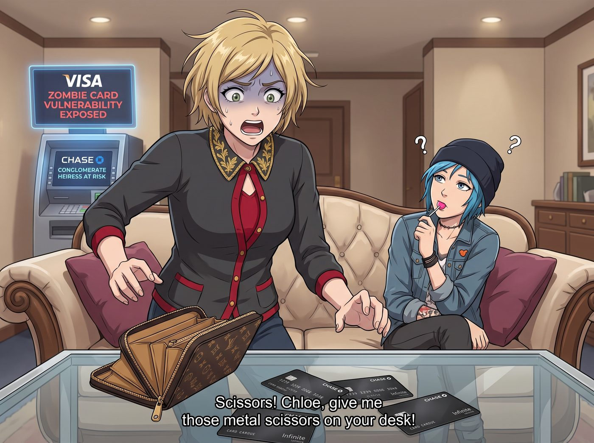
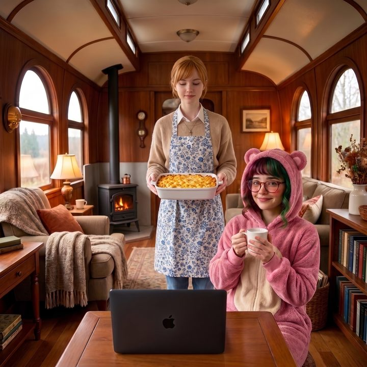

王座決鬥


當 Victoria 看到財經終端機上推送出關於 Visa 殭屍信用卡漏洞被曝光的新聞時，她確實經歷了長達三秒鐘的純粹恐慌。
所謂的殭屍信用卡漏洞，意味著即使持卡人已經掛失、註銷或更換了實體卡片，某些特定的特約商店或訂閱服務依然能夠透過漏洞，繼續對那張已經死亡的卡片進行扣款。
對於普通人來說，這頂多是每個月被多扣幾十塊美金的訂閱費；但對於擁有十幾張無限卡、每張卡額度都高達七位數的 Chase 財團繼承人來說，她過去十年裡註銷過的那些黑卡，簡直就是散落在全球金融系統裡的一堆定時炸彈。
一、恐慌性凍結
「剪刀！Chloe，把妳工作台上的金屬剪刀給我！」
Victoria 尖叫著從沙發上彈起來，一把拉開自己的皮夾，將七八張閃爍著金屬光澤的頂級信用卡全倒在桌上，準備進行物理級別的金融切割。
「老天，Victoria，妳終於瘋了嗎？」Chloe 叼著棒棒糖，看著這個平時把信用卡當命根子的名媛，此刻正像個被喪屍追殺的倖存者一樣，準備把自己的財路全剪了。
就在 Victoria 的剪刀即將剪斷第一張卡的晶片時，一隻穿著粉色小熊睡衣的手，溫柔但堅定地握住了剪刀的刀刃邊緣。
「Victoria 學姐，請不要因為底層系統的漏洞，而對您的優質信貸資產進行自毀性破壞。」
實習生 Lily 推了推反光的圓框眼鏡，將剪刀從 Victoria 手裡抽走，然後將那疊信用卡整齊地疊好。
「可是新聞裡說了，Visa 的授權系統存在漏洞，註銷的卡片還能被殭屍扣款！」Victoria 氣急敗壞地指著螢幕，「我必須立刻打給銀行，把所有帳戶凍結！」
「學姐，恐慌性凍結是零售銀行散戶的行為模式。」Lily 軟糯的聲音裡帶著一種安撫資本家靈魂的冰冷魔力，「在我們二號車廂，當支付巨頭暴露出系統性漏洞時，我們不逃跑，我們要求償。」
二、合法賴帳的誘惑
Lily 打開了她的軍規級平板電腦，螢幕上密密麻麻地顯示著 Victoria 過去五年內註銷過的所有信用卡卡號。
「根據美國公平信用帳單法以及聯邦儲備委員會的相關條例，」Lily 開始了她的法理詠唱，「一旦支付網路本身存在已公開的安全漏洞，舉證責任將完全發生逆轉。持卡人不再需要證明我沒有消費，而是發卡機構必須證明這筆交易絕對安全。」
「所以呢？這只能保證我不被盜刷，但我還是得承擔風險啊！」Victoria 皺著眉頭。
「不，學姐，這意味著我們獲得了無限溯及既往的合法賴帳權。」Lily 的大眼睛裡閃爍著令人不寒而慄的合規掠奪光芒。
她手指在鍵盤上飛舞：「我剛剛已經攔截了您家族信託基金過去三年內，所有透過該支付網路支付的、您可能覺得不太划算的商業訂閱、私人飛機維護年費、以及那些無聊的鄉村俱樂部會費。總計大約四百七十萬美金。我正以懷疑遭受殭屍漏洞攻擊、授權無效為由，向發卡行發起批量強制拒付。」
Victoria 愣住了。她的資本家大腦瞬間完成了邏輯重組：「等等，妳是說，妳要把我這幾年自願花出去的錢，利用這個新聞漏洞，全部包裝成被駭客盜刷的殭屍帳單，讓他們把錢吐出來？！」
「完全正確。」Lily 敲下最後一個回車鍵，抬起頭露出一個純潔無暇的微笑，「恭喜您，學姐。這個漏洞不僅沒有讓您破產，反而為您的信託帳戶憑空增加了四百七十萬美金的流動資金。」
剪刀「啪」的一聲從 Victoria 手裡滑落，掉在地毯上。名媛呆呆地看著螢幕上已經開始處理的退款進度條。
「Lily……」Victoria 深吸了一口氣，眼神從恐懼徹底轉變為了對金錢的狂熱，「把其他發卡機構的近期漏洞也給我查一遍。我要把它們全薅禿。」
坐在旁邊保養槍枝的 Chloe 翻了個巨大的白眼：「資本家真噁心。前一秒還怕得要死，發現能賺錢後，恨不得自己變成喪屍去咬人。」
三、意外的反擊
「叮——」
二號車廂的高級加密郵件伺服器發出了一聲清脆的提示音。
Victoria 原本正端著一杯香檳，準備慶祝那四百七十萬美金的入帳。但當她點開那封來自風險控制中心的官方回函時，她臉上的名媛假笑瞬間凝固了。
郵件的附件不是退款通知，而是一份長達四十五頁的《交易行為與生物辨識溯源分析報告》。
「拒絕退款申請？」Victoria 的聲音高了八度，香檳差點灑在地毯上，「這上面寫了什麼？！他們不僅拒絕了，還附帶了我點擊那些俱樂部訂閱按鈕時的滑鼠軌跡熱力圖？甚至連我當時在私人飛機上的IP地址和地理定位都對比出來了？！」
Chloe 湊過去看了一眼，立刻發出了無情的嘲笑：「哇哦，Victoria。看來對面不只是一台冷冰冰的機器，而是一個精準捕捉了妳有錢任性消費模式的AI加上人工審核的頂級團隊。空歡喜一場吧，資本家？」
Victoria 氣得渾身發抖。她原本以為可以靠系統漏洞白嫖，結果卻被對方的風控系統當成了惡意欺詐的冤大頭給公開處刑。
「Lily！」Victoria 崩潰地轉向工作台，「妳不是說這是無限溯及既往的合法賴帳嗎？！」
四、宿命對手的戰意
然而，工作台前的實習生沒有立刻回答。
Lily 盯著螢幕上那份完美的風控溯源報告，粉色小熊睡衣下的肩膀微微顫抖著。她緩緩摘下了反光的圓框眼鏡，大眼睛裡沒有挫敗，反而燃燒起了一種前所未有的、宛如看見了宿命對手般的狂熱與戰意。
「完美的決策樹……無懈可擊的貝氏網路推演……再加上極度敏銳的人工複查干預。」Lily 軟糯的聲音因為過度興奮而變得有些沙啞，「對面有一位與我同等級的合規架構師。他不僅預判了漏洞會被羊毛黨利用，還提前部署了動態反制矩陣。」
Lily 重新戴上眼鏡，嘴角勾起了一抹令人毛骨悚然的微笑：「Victoria 學姐，您沒有空歡喜一場。這不再是一場枯燥的帳單索賠，這是一場頂級行政黑魔法師之間的王座決鬥。」
實習生的手指在鍵盤上化作一團殘影。
「他們確實在授權真實性的戰場上贏了，證明了那些錢確實是您自己花掉的。」Lily 的語速越來越快，終端機上閃爍著密密麻麻的聯邦法規，「但是，這位對手犯了一個致命的傲慢錯誤——他為了贏下這四百七十萬美金的防禦戰，過度暴露了他們底層AI的數據供應鏈！」
「什麼意思？」Max 抱著相機，在一旁聽得一頭霧水。
「意思就是，為了證明 Victoria 學姐當時在飛機上，他們私自調用了非金融類別的地理定位API；為了證明是她本人操作，私自採集並分析了她的微表情與生物滑鼠軌跡！」Lily 猛地敲下回車鍵，一份全新的、更具毀滅性的行政核彈已經裝填完畢。
「根據加州消費者隱私法案與通用數據保護規則的延伸條款，未經高淨值客戶明確的次級演算法訓練同意書，擅自將客戶的行為特徵餵給AI進行防禦性風控，這構成了嚴重的非法生物特徵捕捉與未授權數據畫像！」
Lily 抬起頭，眼神冷酷得像一台運轉到極致的量子電腦：「我剛才已經向對方的法務部主管，以及那位隱藏在幕後的同行，發送了一封正式的《數據隱私集體訴訟意向書》。我給了他們兩個選擇：要麼證明他們在每一次扣款前都合法取得了 Victoria 學姐關於生物軌跡追蹤的單獨授權書，這顯然不可能；要麼面對聯邦貿易委員會針對其AI濫用的反壟斷與隱私聯合調查。一旦調查啟動，他們的股價在開盤十分鐘內就會蒸發三百億美金。」
車廂裡陷入了死一般的寂靜。Chloe 手裡的棒棒糖掉在了地上。她看著 Lily，就像在看一個為了贏得西洋棋比賽，而決定直接把對手整棟大樓炸掉的瘋子。
五、商譽的休戰
兩分鐘後。「叮——」郵件伺服器再次響起。
這次不是四十五頁的報告，而是一封極度簡短、加密級別極高，且帶著一絲無奈妥協意味的內部回函：「貴方的合規關切已收到。為避免不必要的系統升級摩擦，並基於對頂級客戶體驗的絕對尊重，我們已將該筆四百七十萬美元作為非責任性商譽補償退回您的信託帳戶。期待未來不再於合規審計環節與您交手。祝好。」
看著帳戶裡重新跳躍回來的數字，Victoria 長長地吐出了一口濁氣，虛脫地癱倒在沙發上。雖然過程驚險得讓她減壽三年，但最終，她的資本家尊嚴和金錢都保住了。
「這不是為了錢，這是一場神聖的技術交流。」Lily 滿意地合上筆記本電腦，乖巧地喝了一口熱牛奶，彷彿剛才那個差點掀起全球金融數據海嘯的惡魔根本不是她。
這時，Kate 繫著圍裙，端著一盤剛烤好的起司通心粉走了出來。
「大家怎麼都不說話了？」小天使看著螢幕上那封寫著商譽補償的郵件，眼神裡充滿了溫柔的理解，「哇，對面的那位先生或女士一定也是個充滿智慧的人呢。Lily 和他就像是兩個在鋼琴上四手聯彈的音樂家，雖然一開始有些音符不和諧，但最終還是透過真誠的溝通，奏響了一曲充滿商譽與互相尊重的友誼之歌呀。」
聽著大天使將這場刀光劍影、招招致命的企業級AI數據隱私絞殺戰解讀為和諧的四手聯彈，Max 默默地舉起相機，給正在溫柔微笑的 Kate 和依然處於戰鬥餘韻中的 Lily 拍了一張合照。她決定以後無論發生什麼，都絕對不讓這兩個人分開——因為只有 Kate 的聖光，才能稍微中和一下這個實習生身上那足以毀滅世界的合規黑魔法。